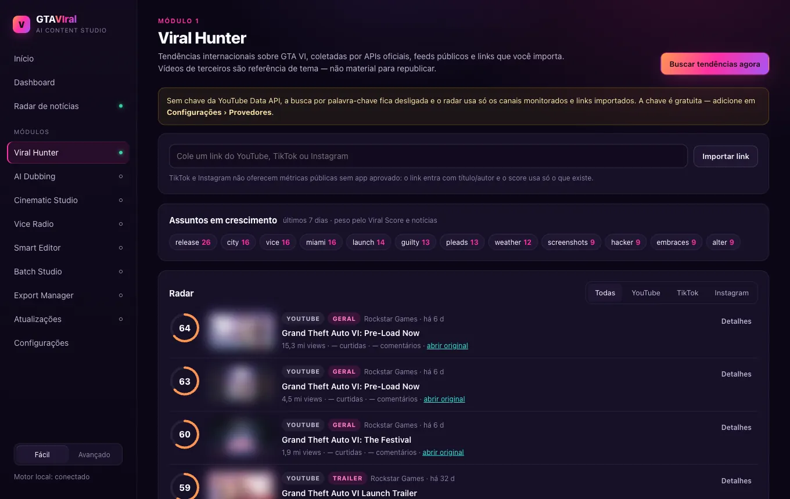
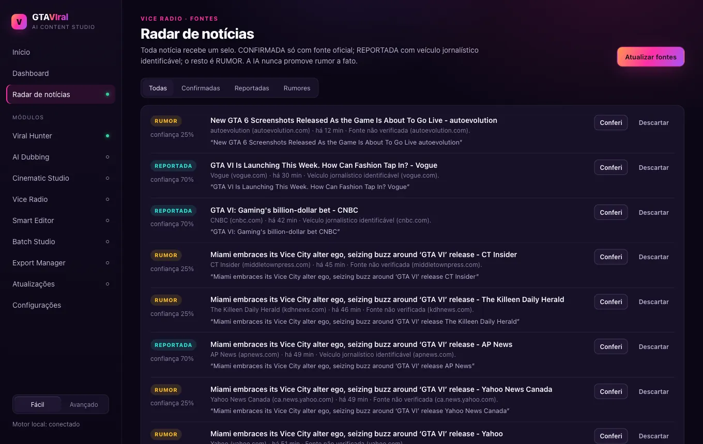
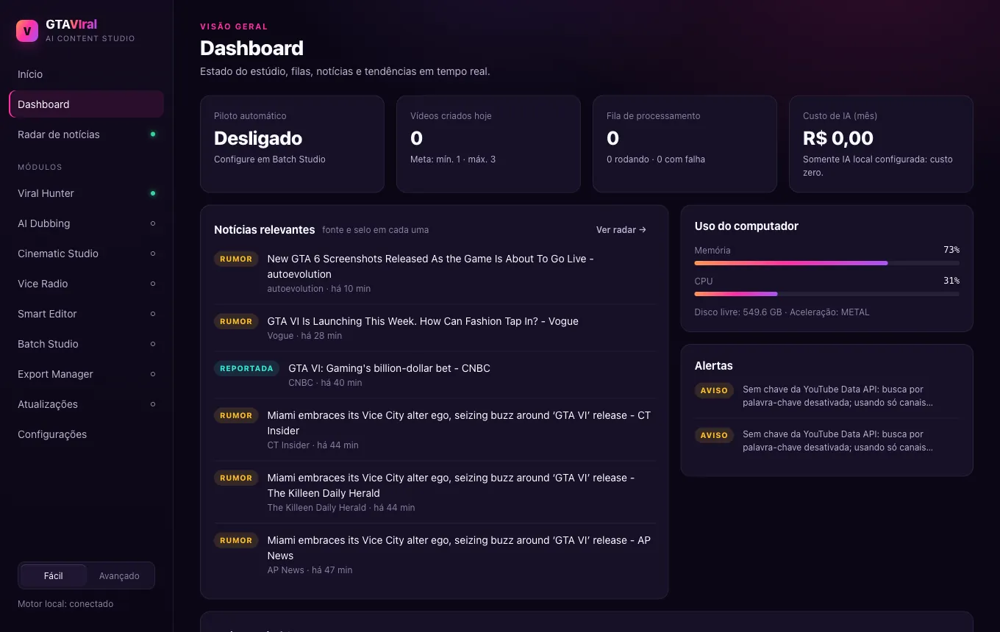
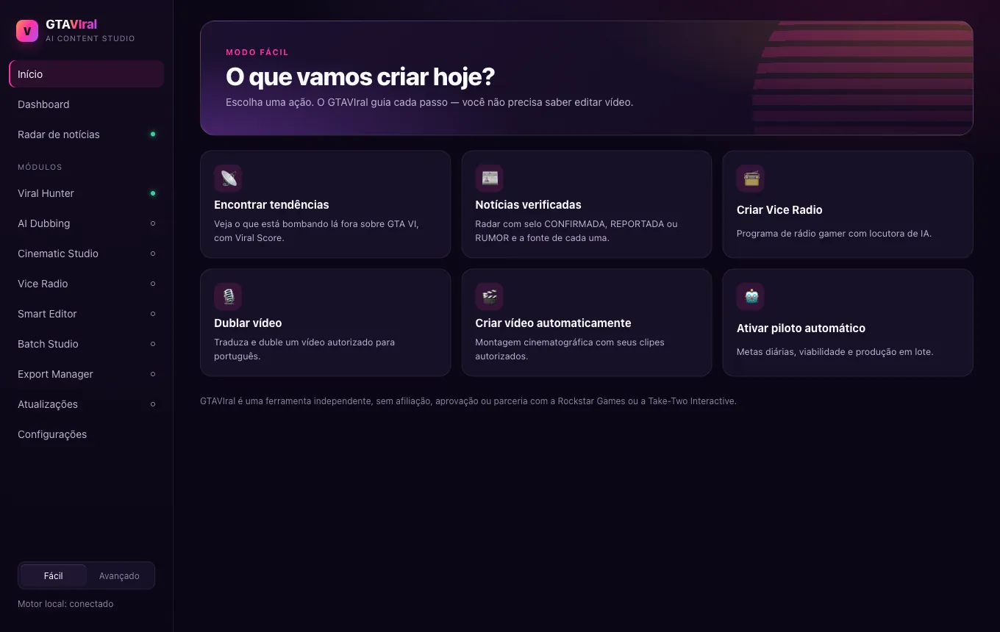

Viral Hunter
Radar de tendências com Viral Score de 0 a 100, assuntos em crescimento e ideias de vídeos brasileiros.
AI Content Studio para Mac e Windows
Encontre assuntos em alta, crie roteiros, narrações e vídeos automaticamente — mesmo sem saber editar.
Pagamento único • Mac e Windows • Sem mensalidade obrigatória
02Como funciona
O Viral Hunter reúne vídeos e notícias internacionais sobre GTA VI e dá um Viral Score a cada assunto — separando métrica medida de estimativa.
Roteiro em português, narração, legendas sincronizadas, cortes cinematográficos com o seu material, título e thumbnail. A IA roda no seu computador.
Exporte no formato de cada rede ou publique pelas integrações oficiais, conforme as permissões de cada plataforma.
03Demonstração real
Capturas da versão em desenvolvimento com dados reais coletados das fontes públicas. Nenhuma tela foi desenhada ou gerada por IA.



04Oito módulos
Radar de tendências com Viral Score de 0 a 100, assuntos em crescimento e ideias de vídeos brasileiros.
Transcreve, traduz com adaptação para o português e dubla vídeos autorizados, preservando música e efeitos quando possível.
Escolhe cenas da sua biblioteca autorizada e monta cortes com zoom, transições, cor e quatro estilos visuais.
Programa de rádio gamer com locutora de IA, vinhetas e trilha, comentando notícias com fonte.
Legendas sincronizadas, headlines traduzidas, títulos, descrições, hashtags e thumbnails escolhidos pelo Diretor Criativo.
Produção em lote com metas diárias, previsão de viabilidade e piloto automático com o computador ligado.
MP4 em 1080p ou 4K conforme o hardware, 9:16, 16:9 e 1:1, de 15 segundos a 3 minutos, multicontas e analytics.
Atualizações verificadas, histórico de versões e instaladores para Mac e Windows. Sem chave de licença.
05Vice Radio
Uma apresentadora brasileira com três personalidades comenta as novidades de GTA VI com vinheta, trilha e efeitos — enquanto cenas cinematográficas passam no vídeo.
Amostra de áudio será publicada aqui com o primeiro episódio oficial.
06Piloto automático
Defina quantos vídeos por dia em cada canal, horários e formatos. O máximo é sempre um limite rígido.
Antes de começar, avalia hardware, notícias disponíveis, material autorizado e orçamento — e diz com franqueza quantos vídeos dá para fazer.
Fila persistente que retoma trabalhos interrompidos, controla CPU e memória e tem pausa de emergência.
Calendário, estilo e limites por conta, com proteção contra postagens duplicadas.
IA local por padrão. Se usar APIs pagas opcionais, você define um teto mensal e o app bloqueia novas chamadas ao atingi-lo.
07Modo Fácil
O Modo Fácil abre com ações diretas — “Encontrar tendências”, “Criar Vice Radio”, “Dublar vídeo” — e guia cada passo com linguagem simples. Quando quiser mais controle, troque para o Modo Avançado.
Quero começar
08Comparação
A economia de tempo depende do seu computador, do material e do tipo de vídeo; não divulgamos números que não foram medidos.
09Oferta
R$47,90
Pagamento único · sem mensalidade obrigatória
Pagamento processado pela Kiwify. Após a compra você recebe um guia em PDF com os links oficiais de download.
10Dúvidas frequentes
Mac com Apple Silicon (M1 ou mais novo) e Windows 10/11 de 64 bits. Mínimo de 16 GB de RAM; 24 GB ou mais é o recomendado. Placas NVIDIA compatíveis aceleram o processamento no Windows; sem elas, o app usa o processador, com mais lentidão.
Não. O instalador traz tudo. No primeiro uso, o app detecta seu hardware e baixa os modelos de IA compatíveis, mostrando o tamanho antes e conferindo a integridade de cada arquivo.
A transcrição, a tradução, a narração e a edição rodam no seu computador. Para pesquisar tendências, ler notícias, baixar modelos e publicar, precisa de internet.
Não. As funções essenciais usam IA local e gratuita. Se quiser, conecte serviços premium como ElevenLabs com a sua própria chave; o app estima os custos e respeita o teto mensal que você definir.
Vídeos de terceiros servem como referência de tema. Para dublar ou editar, importe apenas material próprio ou que você tem autorização para usar — o app pede essa confirmação. O GTAVIral não baixa vídeos de terceiros, não contorna proteções e não fornece músicas protegidas.
Cada notícia mostra a fonte, o link e um selo: Confirmada (fonte oficial), Reportada (veículo jornalístico identificável) ou Rumor. O app não transforma rumor em fato.
Não. Ele ajuda a encontrar assuntos e produzir com mais facilidade, mas o desempenho depende do conteúdo, das plataformas e do público.
O app avisa quando há uma nova versão e instala com verificação de autenticidade. Correções e melhorias da versão adquirida estão incluídas; grandes versões futuras poderão ser vendidas à parte, sem bloquear a sua.
Não. Sem chave, sem login obrigatório e sem limite de instalações.
O canal de suporte aparece no rodapé desta página e no guia de instalação que você recebe após a compra.